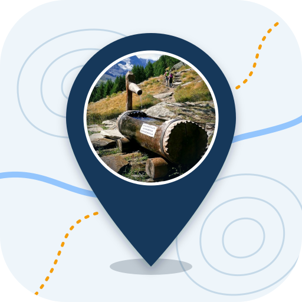

La foto è pubblica. Niente persone riconoscibili. I metadati (GPS, data) vengono eliminati.
Prototipo: nessun dato viene inviato. Account di prova in ACCOUNT_PROVA.md. Senza account si possono solo guardare i punti.
I tuoi punti: 0
Prototipo di studio: i dati sono di esempio e non verificati.
Mappa: © OpenStreetMap, OpenFreeMap, MapLibre. Rilievo: Mapzen/AWS Terrain Tiles. Satellite: Esri, Maxar, Earthstar Geographics (uso didattico). I dati aggiunti restano solo in questo browser.